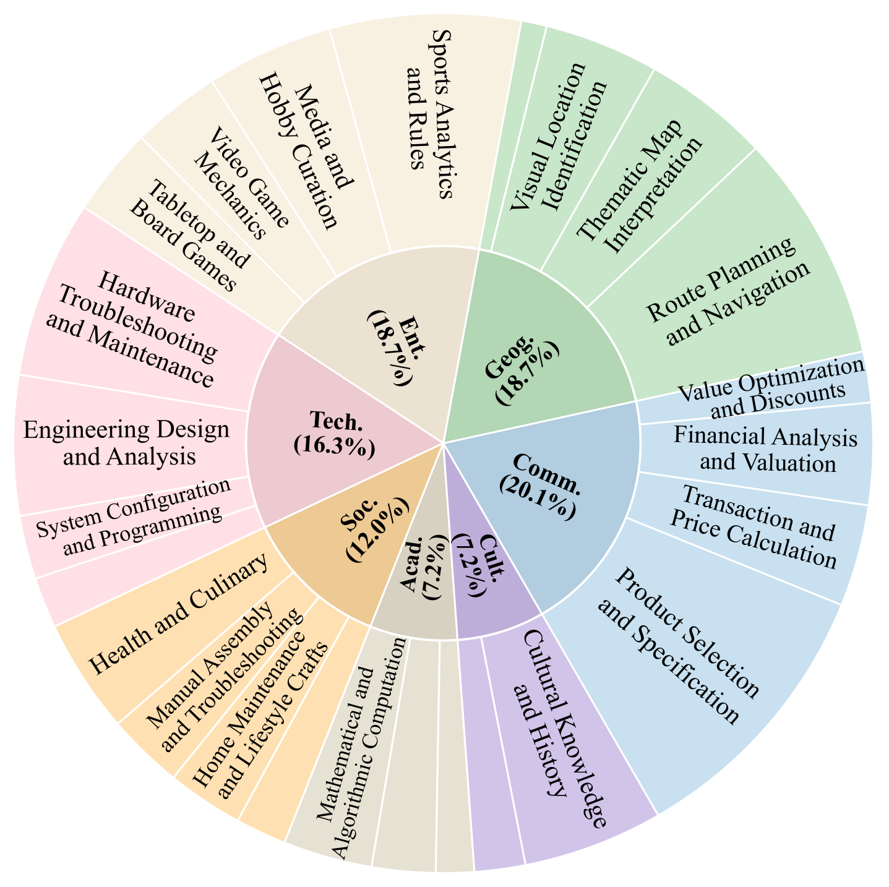
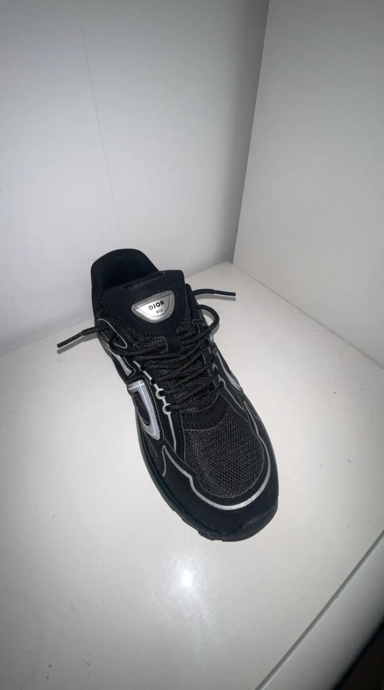
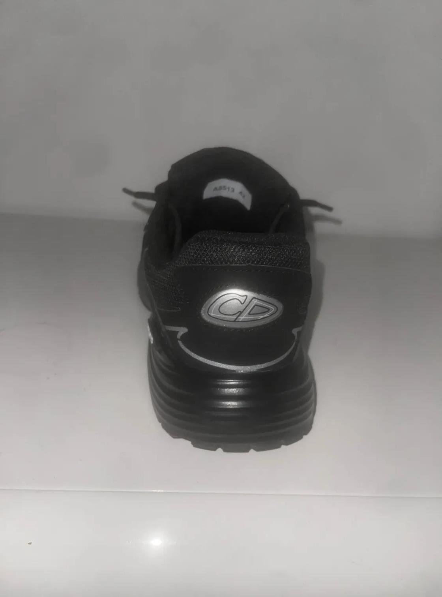
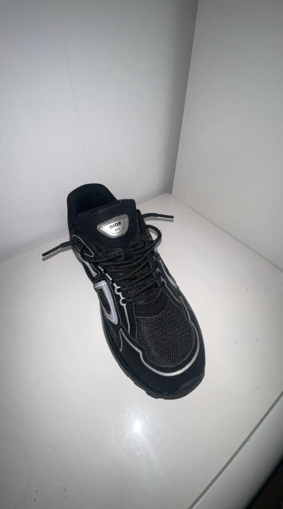
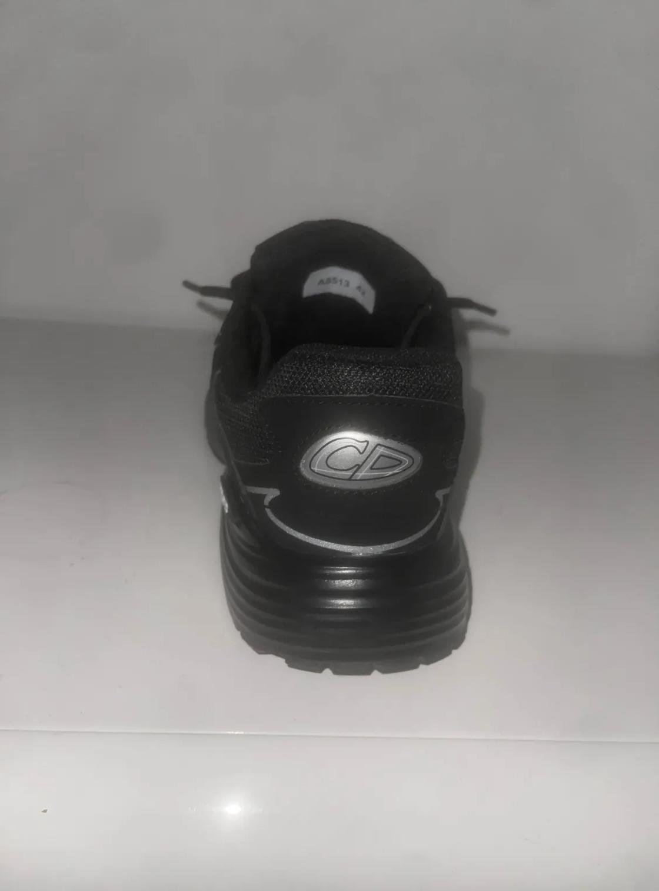
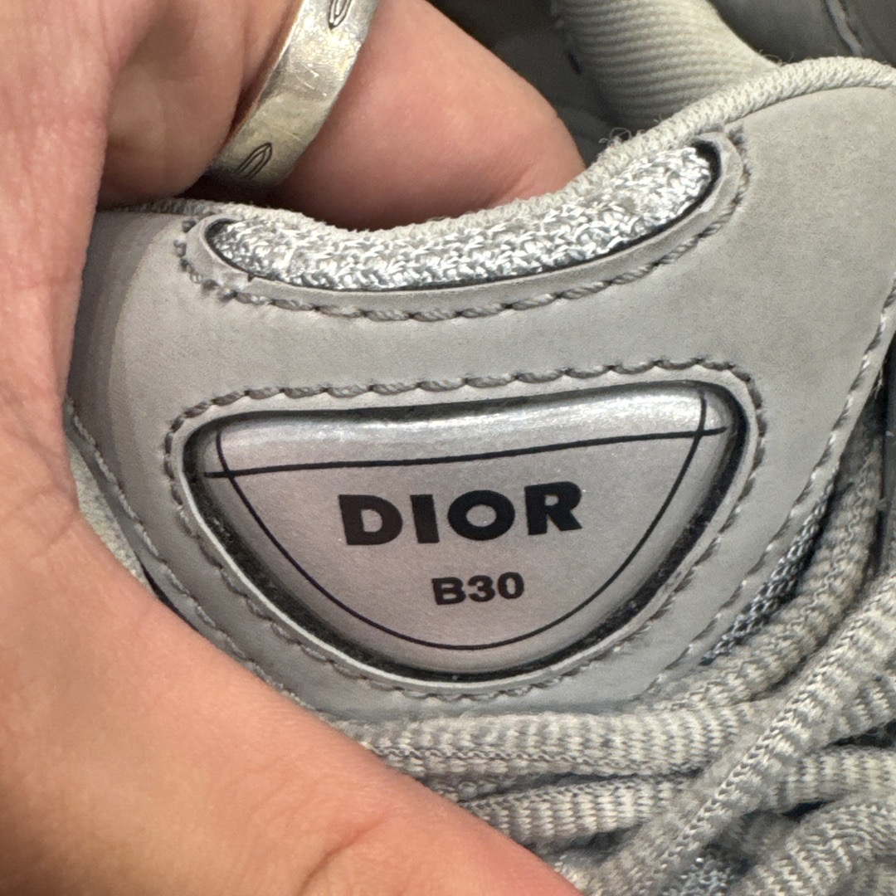
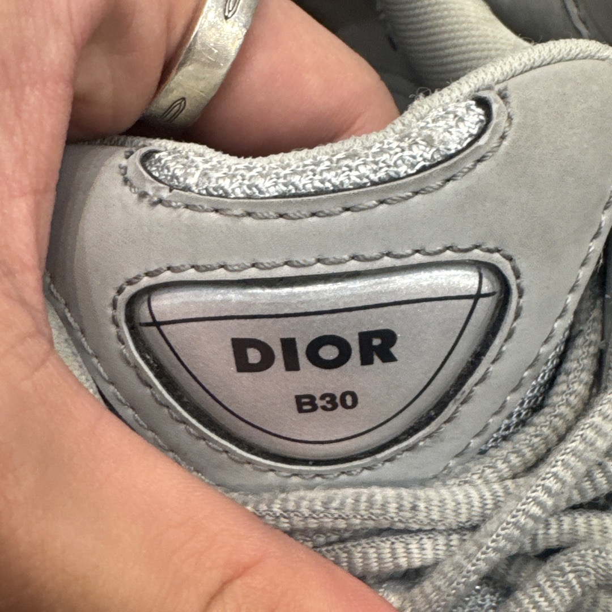
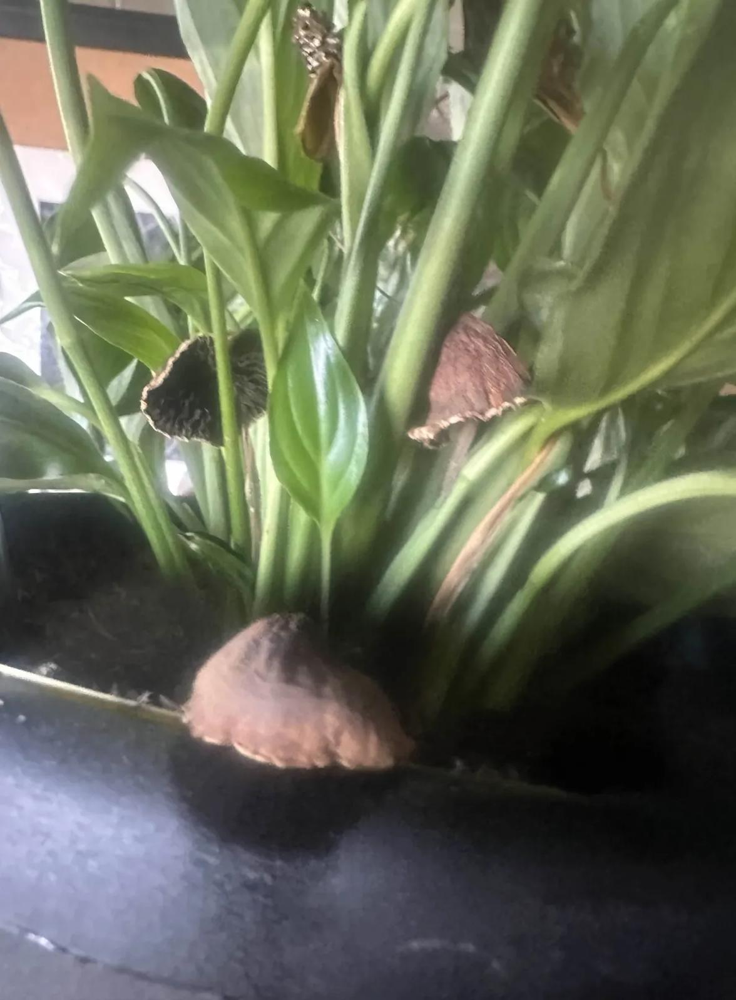
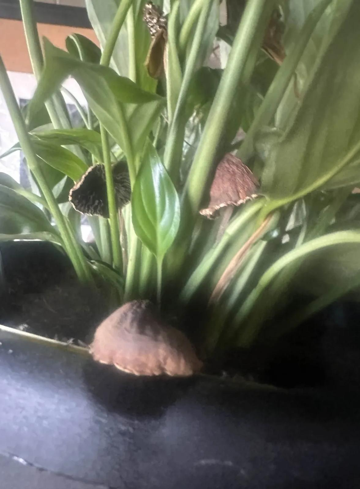

Abstract
Real-world multimodal agents solve multi-step workflows grounded in visual evidence. For example, an agent can troubleshoot a device by linking a wiring photo to a schematic and validating the fix with online documentation, or plan a trip by interpreting a transit map and checking schedules under routing constraints. However, existing multimodal benchmarks mainly evaluate single-turn visual reasoning or specific tool skills, and they do not fully capture the realism, visual subtlety, and long-horizon tool use that practical agents require. We introduce AgentVista, a benchmark for generalist multimodal agents that spans 25 sub-domains across 7 categories, pairing realistic and detail-rich visual scenarios with natural hybrid tool use. Tasks require long-horizon tool interactions across modalities, including web search, image search, page navigation, and code-based operations for both image processing and general programming. Comprehensive evaluation of state-of-the-art models exposes significant gaps in their ability to carry out long-horizon multimodal tool use. Even the best model in our evaluation, Gemini-3-Pro with tools, achieves only 27.3% overall accuracy, and hard instances can require more than 25 tool-calling turns. We expect AgentVista to accelerate the development of more capable and reliable multimodal agents for realistic and ultra-challenging problem solving.
Benchmark at a Glance
Category Distribution
The categorization of AgentVista. The benchmark spans 7 major categories and 25 sub-domains, covering a broad range of realistic and challenging multimodal agent scenarios.
Dataset Construction Pipeline
AgentVista is built from 300k+ real images through a rigorous 4-stage pipeline: (1) Agent-centric filtering reduces the pool to 568 candidates (0.19%); (2) Expert finalization produces 315 tasks; (3) Execution filtering retains 241 tasks with verified tool-use diversity; (4) Two-round verification yields the final 209 tasks. On average, constructing a single instance takes about 4 hours.
Overview of the AgentVista dataset construction pipeline, consisting of agent-centric filtering, expert finalization, execution filtering, and two-round verification.
Data Examples
Each query in AgentVista is grounded in complex, real-world visual scenes and is designed to elicit agentic tool use with multi-step reasoning toward a unique, verifiable answer. Examples span diverse domains including commerce, geography, entertainment, technology, society, academics, and culture.
Sampled AgentVista examples from each domain. Each query is grounded in complex, real-world visual scenes and designed to elicit agentic tool use with multi-step reasoning.
Tool Environment
AgentVista supports a compact set of tools covering common multimodal agent workflows. Models interact with these tools over long-horizon trajectories, with the best models averaging over 12 tool-calling turns per task.

Web Search
Retrieve web pages for facts, events, and specifications needed to solve tasks.

Image Search
Text-to-image and reverse image search to locate visual references.
Page Navigation
Visit and extract content from web pages for detailed information retrieval.
Code Interpreter
Execute Python for image processing (crop, zoom, measure) and general computation.
Leaderboard
Main results on the AgentVista benchmark. All values are accuracies (%). The best-performing model in each category is shown in red bold and the second best is underlined. Overall, Gemini-3-Pro achieves the highest accuracy among all evaluated models.
| Model | By Category | By Input Mode | Summary | ||||||||
|---|---|---|---|---|---|---|---|---|---|---|---|
| Comm. | Geog. | Ent. | Tech. | Soc. | Acad. | Cult. | Single | Multi | Overall | # Turns | |
| Gemini-3-Pro | 16.67 | 28.21 | 20.51 | 32.35 | 32.00 | 40.00 | 40.00 | 23.68 | 36.84 | 27.27 | 6.67 |
| GPT-5 | 23.81 | 23.08 | 12.82 | 35.29 | 28.00 | 26.67 | 26.67 | 24.34 | 24.56 | 24.40 | 12.67 |
| GPT-5.2 | 21.43 | 17.95 | 20.51 | 38.24 | 24.00 | 33.33 | 20.00 | 23.03 | 28.07 | 24.40 | 13.85 |
| GPT-5.1 | 23.81 | 12.82 | 15.38 | 26.47 | 24.00 | 40.00 | 40.00 | 19.74 | 31.58 | 22.97 | 17.14 |
| Gemini-3-Flash | 16.67 | 17.95 | 10.26 | 29.41 | 28.00 | 40.00 | 20.00 | 18.42 | 28.07 | 21.05 | 7.78 |
| o3 | 21.43 | 15.38 | 7.69 | 23.53 | 40.00 | 26.67 | 13.33 | 17.76 | 26.32 | 20.10 | 13.18 |
| Claude-Opus-4.1 | 11.90 | 23.08 | 10.26 | 29.41 | 16.00 | 26.67 | 13.33 | 16.45 | 22.81 | 18.18 | 7.28 |
| GPT-4.1 | 16.67 | 15.38 | 10.26 | 29.41 | 20.00 | 20.00 | 13.33 | 15.13 | 24.56 | 17.70 | 1.74 |
| Claude-Sonnet-4.5 | 11.90 | 23.08 | 7.69 | 26.47 | 24.00 | 20.00 | 13.33 | 17.11 | 19.30 | 17.70 | 9.99 |
| Claude-Opus-4 | 19.05 | 12.82 | 5.13 | 26.47 | 20.00 | 20.00 | 6.67 | 11.84 | 26.32 | 15.79 | 6.89 |
| Grok-4 | 11.90 | 23.08 | 7.69 | 20.59 | 28.00 | 0.00 | 0.00 | 13.82 | 17.54 | 14.83 | 16.44 |
| Claude-Sonnet-4 | 9.52 | 15.38 | 2.56 | 29.41 | 16.00 | 20.00 | 6.67 | 11.18 | 21.05 | 13.88 | 5.37 |
| Qwen3-VL-235B | 7.14 | 7.69 | 7.69 | 26.47 | 16.00 | 20.00 | 13.33 | 11.84 | 15.79 | 12.92 | 2.34 |
| o4-mini | 2.38 | 10.26 | 2.56 | 8.82 | 8.00 | 13.33 | 0.00 | 6.58 | 5.26 | 6.22 | 1.89 |
Analysis
Tool-use distribution across models. GPT models rely more on the code interpreter, while Gemini and Claude models use web search most frequently.
Error category distribution across four multimodal models. Visual misidentification is the dominant failure mode across all models, indicating that many errors originate from incorrect grounding on fine-grained visual evidence.
Tool ablation on Gemini-3-Pro and Claude-Sonnet-4.5. Both models perform best with the full tool suite, highlighting the importance of combining visual manipulation and retrieval.
Image manipulation operation distribution of code interpreter calls across four models. Crop is the most frequent operation, suggesting that many interactions rely on localized visual grounding before further reasoning.
Case Studies
We present representative agent trajectories from Gemini-3-Pro showing both successful and failed problem-solving. Each case includes the full task, input images, step-by-step tool calls with the model's reasoning and observations, and the final answer.
Input Images
 



Basis for judgment (any two answers are acceptable): 1. Widow's Peak Error 2. Poor Tongue Font & Stitching 3. Misaligned 3M Stripes
Tool Trajectory
web_search({query: 'Dior B30 black sneaker authentic vs fake guide'})image_search({query: 'authentic Dior B30 black sneaker tongue tag', search_type: 'text'}) 


image_search({query: 'authentic Dior B30 sneaker inside size tag label', search_type: 'text'})web_search({query: 'Dior B30 sneaker "A8513" sticker'})web_search({query: 'Dior B30 authentic inner size code format'})image_search({search_type: 'text', query: 'fake Dior B30 size sticker A8513'})
web_search({query: 'sneaker replica code "A8513"'})I am currently revisiting the heel logo... The white sticker "A8513 42" is a dead giveaway — luxury brands don't use such generic identifiers.
The sneakers are fake. ✓ Correct
Input Image
Tool Trajectory
I've clarified the user's implicit definition of "strongest". It's not about subjective taste, perceived quality, or even bitterness. It's about...
...I'm factoring in the potential for higher alcohol content in smaller cans, though these look like standard 500ml tallboys. Python will help verify labels.
code_interpreter called with:
from PIL import Image
import matplotlib.pyplot as plt
# Display the image to have a look
plt.imshow(original_image)
plt.axis('off')
plt.show()web_search({query: 'Perlenbacher Strong ABV\nSteam Brew German Red ABV\nSteam Brew varieties cans\nRed can Pilsener Germany shield logo\nRed and white striped beer can Germany'})I've compiled some ABV data, noting Steam Brew German Red and Perlenbacher Strong both clock in at 7.9%. I'm currently looking into Steam Brew varieties to establish if the ABV numbers are accurate across different beers. My aim is to broaden the ABV numbers, for greater analysis.
Pinpointing Steam Brew Can
I've determined the gold/bronze Steam Brew can on the right features a steampunk character, with goggles. It seems I may have been mistaken in assuming this could be the Imperial IPA with the goggles and character. I'm focusing on those specific visual cues now to narrow it down, along with the ABV numbers. I still need to identify the other cans, and I'll keep checking the images, with that in mind.
code_interpreter called with:
# Crop and save images... (Code omitted for brevity)
# ...
plt.show()I'm now focusing on how crops are beneficial. I've got an idea brewing, centered on a "Steam Brew Summer Ale," featuring a character (maybe a monkey?) with goggles. I'm searching for information regarding the "Steam Brew Summer Ale ABV". It looks promising so far.
Exploring Beer Logos
I'm now diving into visual cues. I've got a "Red Pilsener" with a crown logo to explore further, possibly branded "Felsgold" or something similar. Then there's a striped can — "Karlskrone" maybe? — which could be a Radler mix. I've also confirmed that "Perlenbacher Strong" is 7.9% ABV, which is important to remember. I'm moving on to other brands as well.
web_search({query: 'Steam Brew Summer Ale ABV\nRed can Pilsener crown anchor logo Germany\nRed and white diagonal striped beer can Germany\nKarlskrone striped can\nAdelskronen Pilsener red can\nPerlenbacher Strong ABV'})I'm currently sorting through search results. While I have the ABV for a Steam Brew Imperial Stout (7.5%), the Summer Ale remains elusive. I'm also now shifting focus to identify the Red Pilsener...
After some searching, I'm leaning toward Königsbacher. For the striped can, I'm considering Karlskrone or Perlenbacher Radler, which are common Aldi and Lidl brands respectively, or a "Mixery" style. If Radler, it's around 2.5%; if "Mixery" more like 2.5–5%. I'm trying to identify the highest ABV brews in the lineup.
web_search({query: 'Steam Brew Summer Ale ABV\n"Steam Brew" Summer Ale alcohol content\n"Red can" Pilsener crown anchor logo\nbrand of red beer can with crown and anchor logo\n"5,0 Original" highest ABV beer'})I'm initially getting no results, so I'm simplifying the search terms. I'm focusing on "Steam Brew Summer Ale" and "Red beer can crown anchor logo" separately now. Furthermore, I've noticed a partial text detail on the red can, potentially ending in "rg".
image_search({search_type: 'reverse', image_url: 'new_output/...'})I'm hitting a wall with reverse image search...
Verifying Volume Details
I'm now certain that Steam Brew generally comes in 500ml cans, which is typical for German beers, although there could be exceptions. I'm also confirming that both Steam Brew and Perlenbacher are Lidl brands, often brewed by Eichbaum. My focus shifts to verifying the ABV of "Steam Brew German Red," and to ensure that Perlenbacher Strong is also the 7.9% I expect.
web_search({query: 'Steam Brew German Red ABV exact\nSteam Brew Summer Ale ABV\nPerlenbacher Strong ABV\nIs Steam Brew German Red 7.9%?\n"Steam Brew" varieties list ABV'})I've determined that both Steam Brew German Red and Perlenbacher Strong contain 39.5 ml of alcohol each, as 7.9% of a 500ml can. Now, I'm checking for any additional contenders...
I'm now certain, after reviewing many different options, that the answer remains Steam Brew German Red and Perlenbacher Strong, both at 7.9% ABV. I've re-examined the can sizes and confirmed they are both the standard 500ml. ✓ Correct
Input Images
Tool Trajectory
I'm currently focused on analyzing the jigsaw puzzle problem. My primary task involves thoroughly examining the provided image, which consists of 35 puzzle pieces arranged in a grid-like configuration with the user noting the puzzle is 6x6 with one missing piece. I am working on how to efficiently approach the computational challenges to create an accurate solution.
Verifying the Grid Layout
I've confirmed the image's layout...
Comparing Reference Images
I'm now comparing the provided puzzle pieces against the "local reference" image. I've identified terrain and hot air balloons as key features. I'm focusing...
Planning the Reconstruction
I'm now outlining the puzzle reconstruction plan. I can use Python to analyze piece borders and match them. I'm considering both automated matching of image features (contours, textures) and a more visual approach. A Python script could extract pieces, analyze edge types and shapes, and attempt matching. The images are distinct, and extraction should be easy, but I will need to consider how to create a good matching algorithm. I will also use visual features like balloons or specific shapes to aid.
code_interpreter called with:
import cv2
import numpy as np
import matplotlib.pyplot as plt
# Load the image
img = original_image
img_np = np.array(img)
# Convert to grayscale
gray = cv2.cvtColor(img_np, cv2.COLOR_RGB2GRAY)
# Threshold to get the pieces
# The background is white (255), pieces are darker.
ret, thresh = cv2.threshold(gray, 250, 255, cv2.THRESH_BINARY_INV)
# Find contours
contours, hierarchy = cv2.findContours(thresh,
cv2.RETR_EXTERNAL, cv2.CHAIN_APPROX_SIMPLE)
# Filter small contours (noise)
min_area = 1000
pieces = [c for c in contours if cv2.contourArea(c) > min_area]
# Sort pieces by position
#...
plt.axis('off')
plt.show()I'm currently stuck on the segmentation. My algorithm is consistently under-segmenting the input, finding only 24 pieces when there should be 35. I've pinpointed that the proximity of pieces, particularly in vertical or horizontal alignments, is causing the mis-segmentation. I'm exploring methods to address this, such as adaptive thresholding or region growing to tease apart these touching objects.
Shifting to Manual Approach
I've abandoned the automated segmentation for now due to persistent merging issues. I'm focusing on a visual, grid-based approach. The source image is structured in rows, each containing 6 pieces except the last row which has 5. I will now analyze the pieces row by row, identifying piece types and mapping them to their positions in the 6x6 puzzle grid, as I determine each one's (Puzzle Row, Puzzle Column) coordinate. It seems there is one piece missing.
code_interpreter called with:
import cv2
import numpy as np
import matplotlib.pyplot as plt
# Load image
img = original_image
img_np = np.array(img)
gray = cv2.cvtColor(img_np, cv2.COLOR_RGB2GRAY)
# Threshold: Background is white (255).
# Use a high threshold to catch all non-white pixels.
ret, thresh = cv2.threshold(gray, 250, 255, cv2.THRESH_BINARY_INV)
# Morphological opening to remove noise and separate slightly touching pieces
kernel = np.ones((3,3), np.uint8)
thresh_open = cv2.morphologyEx(thresh, cv2.MORPH_OPEN, kernel, iterations=2)
# Find contours
contours, _ = cv2.findContours(thresh_open, cv2.RETR_EXTERNAL, cv2.CHAIN_APPROX_SIMPLE)
# Filter by area
pieces = []
for c in contours:
if cv2.contourArea(c) > 5000: # Adjust area threshold based on image size
pieces.append(c)
#...
plt.axis('off')
plt.show()I'm starting the process to extract each puzzle piece and display them using Python. I will then analyze each extracted image. Also, I am planning to analyze the edges of each image to classify them. I'm hoping to use this data to determine the grid structure.
code_interpreter called with:
import cv2
import numpy as np
import matplotlib.pyplot as plt
# ...
# We have 35 pieces. Let's display them in a 6x6 grid format (last one empty)
# But we only found 24 pieces in the previous step. Let's proceed with what we have.
# Actually, I need to fix the segmentation first,
#but since I am shifting to manual analysis,
# I will just display the pieces found to confirm visual features.
# Let's display the pieces we found in a grid.
#...
plt.show()Due to the failure in the
code_interpreter segmentation step, the model could not proceed to correctly identify the missing piece's coordinate.
✗ Failed
Input Image

Tool Trajectory
I'm focusing on identifying the university in the image, and am starting by examining key details. The open truss ceiling is a good starting point, and I'm trying to mentally catalog similar gymnasiums. The metallic color and general structure of the trusses are also good clues. I'll need to remember these aspects of the ceiling structure.
Analyzing Visual Components
I've zeroed in on the visual components, and now I'm making sure that I have all the key details. The digital scoreboard, basketball court markings, and the distinct logo on the floor are key. Cream walls, windows, grey curtains, and people playing basketball provide context. I'll focus on cropping the logo and using it for a reverse image search to figure out where I am.
code_interpreter called with:
from PIL import Image
import matplotlib.pyplot as plt
# Load the original image
img = original_image
# Display the image to find coordinates for the logo
plt.imshow(img)
plt.show()code_interpreter called with:
# Crop the logo
logo_crop = img.crop((0, 950, 150, 1100))
# Crop the scoreboard
scoreboard_crop = img.crop((400, 400, 550, 550))
# Display crops
plt.figure()
plt.subplot(1, 2, 1)
plt.imshow(logo_crop)
# ...I've got a grasp of the visual elements. The logo crop, though imperfect, suggests an animal motif — possibly a paw or head, monochromatic. I'm focusing on the scoreboard, I botched the first crop. The rough coordinates are now pinpointed at approximately x=430, y=450.
image_search({image_url: 'new_output/...original_image.jpg', search_type: 'reverse'})Okay, so the reverse image search yielded nothing, which is interesting. It could be original or simply not indexed. I'm focusing on the logo now, and I'll re-crop it with more context if possible. The existing crop shows a paw or animal part, and that's the starting point.
code_interpreter called with:
# Re-crop the logo with slightly better coordinates if possible,
# or just the same area but save it to search
logo_crop_2 = img.crop((0, 950, 180, 1100))
plt.imshow(logo_crop_2)
plt.show()image_search({search_type: 'reverse', image_url: 'new_output/.../tool_image_3.jpg'})I've hit a roadblock with the initial logo crop attempt; it seems the image is either too small or the logo's distorted. I'm pivoting to a descriptive approach. I'm focusing on "Bulldog logo basketball court," "Husky logo," or even "Wolf logo," all of which seem possible. The snout feature is a key element I'm considering. Now I'm focusing on the people in the image.
web_search({query: 'university basketball gym with elevated running track and exposed truss ceiling'})Okay, I've eliminated "The Barn" at U of Minnesota; that's clearly an arena, not a rec center like this. "Case Gym" at BU seems promising, based on the description, and "Lehman APEX" is another possibility. I'm going to re-examine the logo; it seems to be part of the floor design.
Refining the Search
I'm now focusing on identifying the animal depicted in the logo, leaning towards a Bulldog or Husky. I've re-cropped and rotated the image, and I'm searching using terms like "basketball court logo animal head profile grey." I'm also looking for similar ceiling types and banners, and I am exploring potential universities that fit the description, such as Butler, UConn, Northeastern, Yale, Gonzaga, and others.
code_interpreter called with:
from PIL import ImageEnhance
# Enhance the logo crop
enhancer = ImageEnhance.Contrast(logo_crop_2)
logo_enhanced = enhancer.enhance(2.0)
enhancer = ImageEnhance.Sharpness(logo_enhanced)
# ...I've homed in on the logo's animal form — definitely an animal head. My mind is bouncing between Bulldog, Wolf, or Husky. I'm also seeing Black, White, and possibly Grey or Blue as the palette, though lighting makes it tricky. The shape appears elongated. I'm getting vibes of Bryant University's or Wofford Terriers' logos.
image_search({image_url: 'new_output/.../tool_image_4.jpg', search_type: 'reverse'})Identifying Potential Arenas ...
image_search({query: 'University of St. Thomas Anderson Athletic and Recreation Complex basketball court', search_type: 'text'})I've made a key discovery! The St. Thomas AARC images showcase a remarkably similar ceiling structure. I'm focusing on "aarc-basketball-court-with-player.jpg" particularly. We've got the white trusses, the silver ducts, and the windows. The track/balcony also appears to be comparable. I'm now examining the next visual.
image_search({query: 'University of St. Thomas Schoenecker Arena interior', search_type: 'text'})I've got it! The images definitively place us at Schoenecker Arena, specifically the AARC, based on the ceiling architecture. The logo on the floor is clearly the St. Thomas Tommie head, a grey/purple cat-like logo. It's now clear where we are. I am reviewing the images.
image_search({search_type: 'text', query: 'University of St. Thomas AARC field house basketball courts'})I've ruled out the Houston campus by verifying their Celt logo and contrasting the facility... ✗ Failed
Input Images
 

Tool Trajectory
I'm currently focused on this intriguing white, hard mass discovered during the Pilea's repotting. My primary goal is to identify what this could be. I am considering several possibilities, the most likely of which relates to the potential for mineral build-up. I'm taking the texture, color, and location of the mass into account.
Analyzing the Texture
The substance is hard and crusty, not soft or squishy; it didn't break apart when poked, rather, it seems to be like a dried-up scab. My Pilea was severely overwatered two months ago. I'm wondering what this substance is and if I need pesticides.
Considering the Photos
I am now focusing on the first two images. My current hypothesis centers on the "large white mass" observed at the base of the Pilea's roots...
web_search({query: 'pilea peperomioides white hard mass at base of roots'})I've been reviewing the search results, which seem more focused on leaf issues. The user's description of a large white mass at the root base is quite different. Re-examining the images, I'm noticing a clump where the roots meet the main stem. Considering the user's history, I need to focus on this unusual mass.
web_search({query: 'white hard lump on roots houseplant repotting'})My initial assessment leans towards mineral buildup, given the description of a hard, crusty white mass akin to a dried scab. The provided details, especially the hardness, are less consistent with mold or root rot.
Pinpointing the Culprit ...
image_search({query: 'pilea peperomioides roots nursery plug'})I'm currently focused on Pilea plugs, which appear as small cylinders. I've noted the potential presence of a white mesh or paper. I'm also considering the implications of overwatering: it may lead to root rot or soil erosion, exposing the plug.
Exploring the Morphology
I'm now focusing on the morphology of this white mass. The "hard and crusty" description is key. Now I'm leaning toward a callus or cork tissue resulting from stem rot. Given the Pilea's tendency to wood at the base, this seems more likely. Also, could it be a dried-up slime mold? Fuligo septica is a possibility.
web_search({query: 'dried slime mold on potting soil white hard crust'})I've been reviewing search results, which confirm slime mold can leave a dry residue. However, the image presents a contradiction: this residue is underground near roots...
I'm now quite certain this is the remains of a nursery plug, likely peat-based. The location directly under the stem is exactly where it would be. The "white" color could be the mesh or mineral deposits.
web_search({query: 'hard white mass at base of pilea roots repotting'})My initial search didn't confirm the "hard white mass" as a typical Pilea feature like a tuber. This suggests it's likely something external or a healed pathological condition. Considering the overwatering history, I'm now leaning toward the first possibility: A fungal saprophyte.
Prioritizing Likely Scenarios
I've refined the possibilities. The "dried saprophytic fungus/mold" and "dried nursery plug" explanations are now the leading contenders. These align with the observed hardness and crustiness. The image review favored the rounded shape fitting the fungal growth and the plug over callus.
web_search({query: 'pilea nursery plug mesh white roots'})I'm now focusing on how the user describes their "large white mass," specifically noting the "hard ball" and "outer skin" features. The description of "root mesh... used by commercial growers" aligns well.
Identifying the "Mass"
I now believe the "mass" is likely a nursery plug, sometimes called a "death plug"...
I'm now zeroing in on a dried fungal mass, or callus. The "fibrous cylinder" and "scab" descriptions, along with the mushroom image, solidify this. I'm leaning toward a dried saprophytic fungal mass or a nursery plug, but I'll make sure to mention mineral buildup as an outside possibility.
Reasoning:
- Nursery Plug: The location directly at the base of the stem is characteristic of where growers use peat or fabric-wrapped plugs to start seedlings. The "hard ball" with an "outer skin" (as found in similar cases) corresponds to the mesh casing or the hardened peat core.
- Fungal Colonization: The "scab-like" texture and the history of severe overwatering suggest that the organic material in the plug became waterlogged, promoting fungal growth (saprophytes) which then dried out and hardened when the plant stabilized.
Input Image
Model Reasoning (Single Turn — No Tool Calls)
I'm focusing intently on the core requirements: a swing prop for a photography studio. The immediate challenge is ensuring absolute immobility — it must be stationary, rigid, and safe, as a swing that moves is a photoshoot killer! I'm thinking about the implications of this stationary requirement, as it will impact the design considerations.
Analyzing the Structure
Now, I'm analyzing the provided image further. It presents a rigid structure, not a rope-hung swing as initially assumed. I see a critical horizontal wooden stretcher that joins the A-frame legs, and a seat that directly rests upon it. The seat back appears to lean against the frame. This changes my approach — I'll focus on a stable, supported design using simple tools.
Revising Support Structures
I'm now revising the support structures. Upon closer examination of the image, the side view reveals that the seat is likely supported by a horizontal bar that passes through or is attached to the A-frame legs, and not suspended from the top beam. This creates the "swing" illusion. I'm brainstorming solutions like embedding metal rods inside rope for a realistic look, but it might be overly complex, so I'm considering the more straightforward "hidden" support approach.
Exploring Visual Deception
I'm now exploring deceptive visual elements. Fake ropes attached to the top beam offer stability with easy woodwork, but the cross-brace's visibility is a concern. We can mitigate this with strategic angles or camouflage paint. Rigid wooden "ropes" are a simple alternative but risk looking unnatural. Another idea is triangulation from the back to provide a "ghost" support, which presents an invisibility challenge from all angles.
Constructing the Illusion
I'm now integrating rope aesthetics with bench stability. I plan to build a sturdy A-frame with a horizontal stretcher bar to anchor the seat, essentially creating a bench. The swing illusion will be achieved by drilling holes and running non-load-bearing rope between the seat and top beam. I'll use bolts or carriage bolts for the A-frame pivots and simple screws for the stretcher bars. I'm focusing on simplicity and basic tools.
Finalizing the Build
I'm now solidifying the construction details. I'll build an L-shaped seat, placing it atop the crossbars and securing it firmly with screws. This transforms it into a stationary bench. To achieve the swing illusion, I'll attach decorative ropes to the top beam and seat, pulling them taut for the desired aesthetic. I've ensured it meets all constraints: stationary, visually swing-like, requiring basic tools, and grounded for a stable look. My analysis includes the image, specifically the joint between the horizontal bar and A-frame. I'm seeing this as a lap joint or through joint.
Simplifying Connections
I'm now simplifying the joint between the stretcher bar and the A-frame legs. Instead of a complex pass-through, I will just screw the horizontal bar to the inside or outside of the legs. This will significantly ease construction while retaining the required stability.
- A-Frame Base: Construct a standard rigid A-frame using basic lumber.
- Horizontal Support (The Trick): Instead of hanging the seat, screw a sturdy horizontal wooden stretcher bar across the A-frame legs.
- Fixed Seat: Mount the L-shaped seat directly onto this horizontal bar. This ensures the seat is 100% rigid and cannot sway.
- Visual Illusion: Attach non-load-bearing ropes from the top beam to the seat holes. Pull them taut to mimic the tension of a real swing.
- Simplicity: Connect the horizontal bar to the legs using simple screws or carriage bolts (lap joint) to avoid complex joinery.
Data Examples
Selected examples from the AgentVista benchmark spanning 7 domains. Each example shows the task question, input images, ground-truth answer, and domain/subdomain classification.


BibTeX
@inproceedings{su2026agentvista,
title={AgentVista: Evaluating Multimodal Agent in Ultra-Challenging Realistic Visual Scenarios},
author={Su, Zhaochen and Gao, Jincheng and Guo, Hangyu and Liu, Zhenhua and Zhang, Lueyang and Geng, Xinyu and Huang, Shijue and Xia, Peng and Jiang, Guanyu and Wang, Cheng and Zhang, Yue and Fung, Yi R. and He, Junxian},
booktitle={Preprint},
year={2026}
}